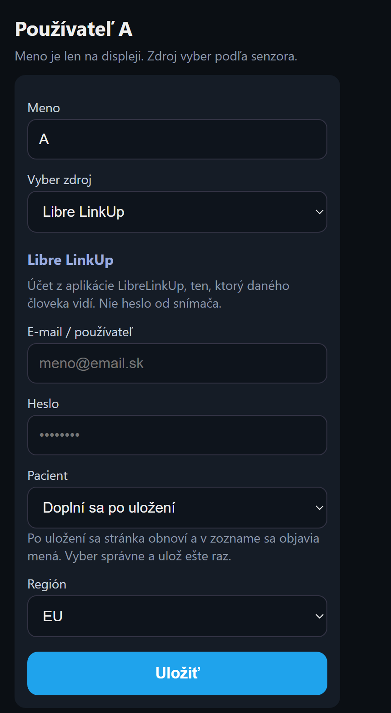
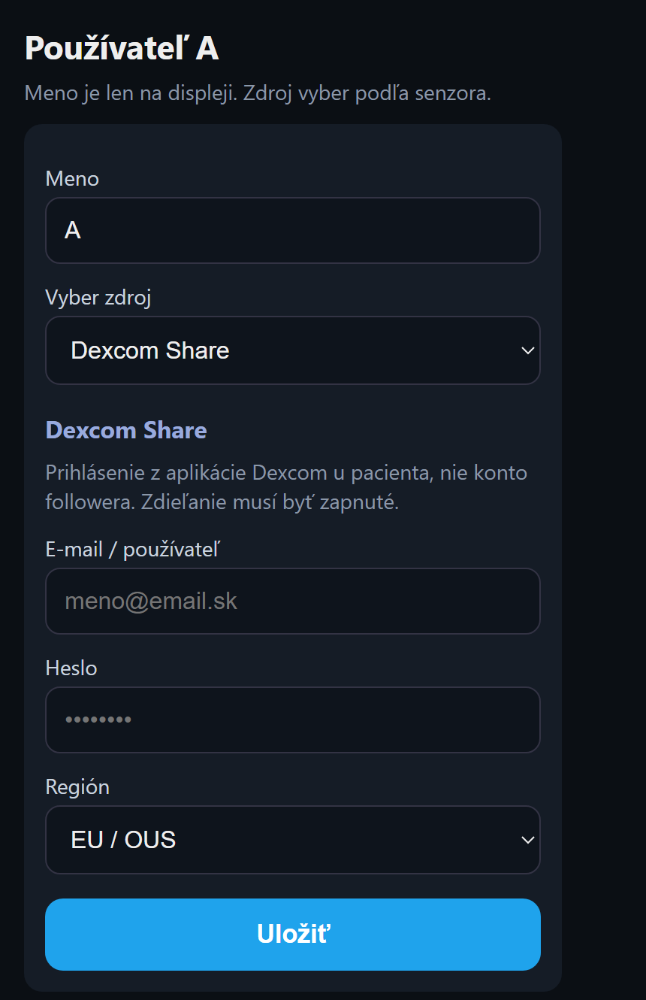
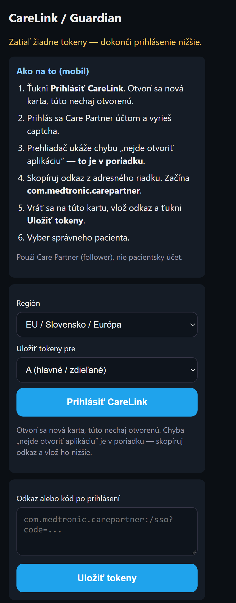

GlukoView je len informatívny displej. Nie je zdravotnícka pomôcka. Dávku inzulínu a rozhodnutie o liečbe rob vždy v aplikácii od výrobcu senzora.
Nastavenie je v prehliadači telefónu, nie na displeji.
Kým displej ešte nemá domácu WiFi: na telefóne sa pripoj na sieť GlukoView, v prehliadači otvor 10.1.1.1, vyber svoju WiFi a zadaj heslo. Potom pokračuj sprievodcom.
Kruhový displej ukazuje jedného človeka. Široký vie ukázať dvoch vedľa seba. Pri dvoch ľuďoch sa každý nastaví zvlášť, A a potom B.
Použi účet z aplikácie LibreLinkUp, ten, ktorý daného človeka vidí. Nie je to heslo od snímača.
Na Slovensku nechaj región EU.
Jedno Libre konto a dvaja ľudia: rovnaký e-mail a heslo pri A aj pri B, iné meno v poli Pacient. Dve kontá: pri B iný e-mail a heslo.
Keď prihlásenie zlyhá, skontroluj e-mail, heslo a región. Keď zoznam mien ostane prázdny, je to účet, ktorý v LibreLinkUp nikoho nevidí.

Použi prihlásenie z aplikácie Dexcom u pacienta. Konto z aplikácie Follow nestačí. V aplikácii Dexcom musí byť zapnuté zdieľanie (Share).
Na Slovensku nechaj región EU / OUS.
Meno pacienta sa tu nevyberá. Displej číta hodnotu z tohto jedného účtu.

Použi účet Care Partner (nasledovateľ). Nie je to účet pacienta, ktorým sa ovláda pumpa.
Na Slovensku nechaj región EU / Slovensko / Európa. Pri jednom CareLink konte nechaj A (hlavné / zdieľané).
com.medtronic.carepartner.Odkaz platí asi 10 minút. Keď vyprší, začni znova od kroku 2.
Jedno CareLink konto a dvaja ľudia: prihlás sa raz a pri A a pri B vyber iného pacienta. Dve CareLink kontá: pri B zopakuj prihlásenie a v poli „Uložiť tokeny pre“ vyber B.
